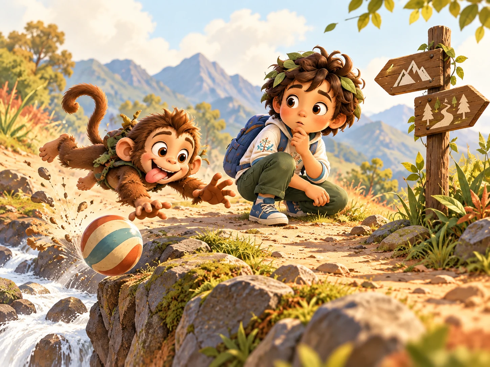

Una sección solo para reír
Risas con Queñal
Aquí los chistes se cuentan completos: primero la pregunta, después una pausa breve y finalmente el remate. No se analizan, no tienen preguntas de comprensión y no forman parte de Explora.

5 libres · 7 Familia Plus